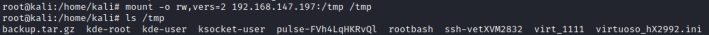

9.NFS root squashing(ports 111,2049)
• NFS (Network File System) is a popular distributed file system.
• NFS shares are configured in the /etc/exports file.
• Remote users can mount shares, access, create, modify files.
• By default, created files inherit the remote user’s id and group id (as owner and group respectively), even if they don’t exist on the NFS server.
Check for NFS root squashing vulnerability
◇ Check from the target: Check the contents of /etc/exports for shares with the
no_root_squash option:
target@debian:~$ cat /etc/exports
◇ Show the NFS server’s export list:
attacker@kali:/# showmount --exports <target>
◇ Nmap scripts:
Once we have found a NFS ports open, we can use some nmap NSE scripts to know more
▪
nfs-ls.nse → Access rights + Available Exports files (Directory Listing) ▪
nfs-showmount.nse → Available Export folder ▪
nfs-statfs.nse root@kali:/# ls /usr/share/nmap/scripts/ | grep nfs
root@kali:/# nmap --script nfs-ls,nfs-showmount,nfs-statfs <IP Address>
◇ Mount an NFS share:
attacker@kali:/# mount -t nfs -o rw,vers=2,nolock 192.168.1.25:[remoteDirectory] [localDirectory] #now attacker and target are sharing the folder
mount options:
- -o, --options <list> → comma-separated list of mount options
→ -w, --rw, --read-write → mount the filesystem read-write (default)
→ vers=<number> → select the nfs version, we should specify to use version 2 because if it doesn't have any authentication or authorization.
→ nolock → disables file locking. This setting is occasionally required when connecting to older NFS servers.
- -t, --types <list> → limit the set of filesystem types
Vulnerability
•
Any Ip address can mount folder If the exported directory, like in our case is followed by a “*” value, means that is allowed mounting them from any IP address or host.
•
Only Whitelisted Ip Address can mount folder Ideally an administrator should explicitly define (whitelist) IP addresses or hosts that should be allowed to connect to the NFS server
Even in the case where our access is restricted due to an NFS whitelist configuration like the above, the output still gives us valuable information regarding which IP addresses or hosts can mount the available exports.
In this scenario
◇ we have to check if we can spoof our IP address to match a whitelisted IP address or take control of a host which is allowed to connect.
Root Squashing
Root Squashing is how NFS prevents an obvious privilege escalation.
If the remote user is (or claims to be) root (uid=0), NFS will instead “squash” the user and treat them as if they are the “nobody” user, in the “nogroup” group.
While this behavior is default, it can be disabled!Disable Root Squashingno_root_squash is an NFS configuration option which turns root squashing off.
When included in a writable share configuration, a remote user who identifies as “root” can create files on the NFS share as the local root user.